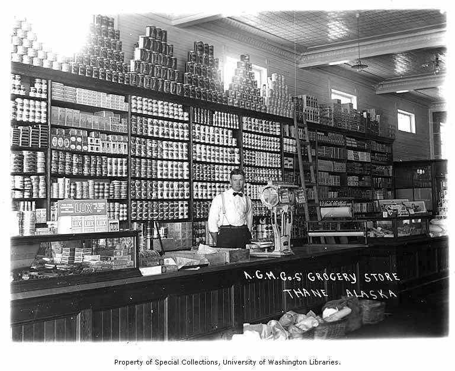

當戰爭、封鎖或大型災害讓超市空架、物流停擺、水電中斷，你家能靠自己撐幾天？居家儲備和〈緊急避難包〉是兩件事：避難包是「拎了就走、撐 3 天」，居家儲備則是「留在家裡、撐更久」。這篇教你用「每人每天需求量」回推儲備目標，並附上 3 天／1 週／2 週的儲量對照表，讓你不必猜。

儲備量沒有標準答案，取決於你想撐多久。實務上可分三個層級：
建議先把 3 天湊滿，再逐步往兩週延伸。與其一次追求完美，不如先確保最低限度隨時就緒。
水是儲備中最關鍵、也最占空間的一項。飲用與料理的最低需求約為每人每天 3 公升；若把盥洗、清潔、沖廁算進去，實際用量會更高。世界衛生組織在緊急情境的總量建議約為每人每天 7.5–15 公升。以每人每天 3 公升的飲用底線計算：
| 家庭人數 | 3 天 | 1 週 | 2 週 |
|---|---|---|---|
| 1 人 | 9 L | 21 L | 42 L |
| 2 人 | 18 L | 42 L | 84 L |
| 4 人 | 36 L | 84 L | 168 L |
儲水量大時，除了瓶裝水，也可準備大容量儲水桶，並學會淨水以延長水源（見〈如何把水變乾淨、能安全飲用〉）。收到停水警訊時，第一時間把浴缸、水桶、大容器裝滿當作清潔與沖廁用水。
儲備食物的三個原則：常溫可存、免（或少）烹煮、家人平常就會吃。囤一堆不會吃的東西，只會放到過期浪費。建議搭配：
停電停瓦斯時，再多食材也煮不熟。準備一個卡式瓦斯爐＋數罐瓦斯罐（放通風處、遠離火源），或備妥可直接食用的即食糧。長期停電的完整對策見〈長期停電、停水的生活對策〉。
| 類別 | 核心品項 | 2 週目標（單人概估） |
|---|---|---|
| 水 | 瓶裝水、儲水桶、淨水器材 | 飲用 42 L 起 |
| 主食 | 米、麵、麥片、即食飯 | 約 2–3 kg |
| 副食 | 罐頭、調理包、堅果 | 14–28 份 |
| 藥品 | 慢性病藥、常備成藥、敷料 | 2 週以上 |
| 能源 | 電池、行動電源、卡式爐＋瓦斯 | 依裝置數量 |
| 衛生 | 衛生紙、生理用品、垃圾袋、漂白水 | 2 週用量 |
通用清單容易忽略家裡最需要照顧的人。依成員狀況額外加購：
儲備不必一次砸大錢。用「每次採買多帶一點」的方式，幾週就能累積出可觀的量：
儲備最怕「買了就忘、放到過期」。解法是「先進先出」（FIFO）輪替：把儲備當成日常庫存的延伸，平常就從最舊的開始吃、買新的補到後面，讓庫存不斷流動。實務小技巧：
好的居家儲備不是災難來臨前的恐慌搶購，而是把「多備一點」變成日常習慣。當儲備和你平常的飲食、消耗自然融合，它就不會過期浪費，也不會在超市空架時才手足無措。真正有韌性的家庭，不是囤了最多東西的那個，而是平常就準備好、心裡有底的那個。從今天的下一次採買，多帶一手水、幾個罐頭開始就好。
至少 3 天、理想 1–2 週。先湊滿 3 天，再往兩週延伸。
以每人每天飲用 3 公升為底線乘上天數與人數；把盥洗清潔算進去要更多。
常溫可存、免冷藏、免或少烹煮、家人平常就會吃的品項，並補充鹽、油與維他命。
用先進先出輪替，把儲備當日常庫存吃掉再補，並定期檢查效期。
盡量不開門，冷藏約撐數小時、塞滿的冷凍約 1–2 天。明顯回溫、有異味或退冰過久就丟棄，別冒險。
※ 本文為一般防災準備參考，整理自內政部消防署、WHO、Ready.gov 等公開資訊，不能取代官方即時指示與專業醫療建議。慢性病藥物儲備請與醫師或藥師討論。